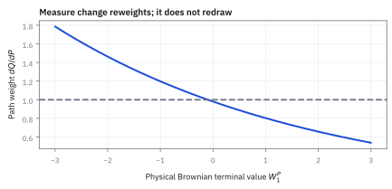
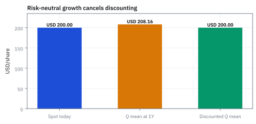

12.6 Girsanov and the Risk-Neutral Measure
เปลี่ยนน้ำหนักของเส้นทางเพื่อใช้โลกที่ตั้งราคาได้
หุ้น \$100 ตัวเดิมจากหัวข้อ 12.2 แบบจำลองให้โต 12% เหวี่ยง 28% ต่อปี ดอกเบี้ยปลอดความเสี่ยง 2% โอกาสที่ปีหน้าราคาเกิน \$110 คือเท่าไร และตัวเลขโอกาสที่ใช้ตั้งราคาสัญญาที่จ่าย \$1 เมื่อราคาเกิน \$110 คือเท่าไร?
เฉลย: โลกจริงให้ 47.93% แต่ตัวเลขที่ใช้ตั้งราคาคือ 34.13% ต่างกัน 13.80 จุด สัญญานั้นราคา \$0.3345 ตัวเลขหลังไม่ใช่คำทาย มันคือโอกาสในโลกที่หุ้นโตเท่าดอกเบี้ยพอดี และสองคนที่เห็นต่างเรื่อง 12% จะได้ราคาเดียวกัน
Girsanov theorem บอกวิธีเปลี่ยนน้ำหนักของทุกเส้นทาง โดยไม่เปลี่ยนเส้นทางเอง ให้ drift กลายเป็นดอกเบี้ย
ศัพท์ที่ใช้ในหัวข้อนี้
- Girsanov theorem
- ผลที่ว่าการคูณน้ำหนักแบบ exponential ให้ทุกเส้นทาง ทำให้ Brownian motion มี drift ใหม่ แต่ความผันผวนเท่าเดิม ใช้ย้าย drift ของสินทรัพย์ไปเป็นดอกเบี้ยเพื่อตั้งราคา
- physical measure
- ชุดน้ำหนักโอกาสที่พยายามอธิบายความถี่ของเหตุการณ์จริง เขียนว่า P ใช้ทำคำทาย stress test และวัดความเสี่ยง
- risk-neutral measure
- ชุดน้ำหนักโอกาสที่ทำให้ราคาคิดลดของสินทรัพย์ที่ซื้อขายได้เป็น martingale เขียนว่า Q ใช้ตั้งราคาแบบไม่มีเงินฟรี ไม่ใช่คำทายโลกจริง
- market price of risk
- ผลตอบแทนส่วนเกินเหนือดอกเบี้ยต่อความผันผวนหนึ่งหน่วย คือ Sharpe ratio ของสินทรัพย์ ใช้กำหนดว่าต้องเอียงน้ำหนักมากแค่ไหน
- Radon–Nikodym derivative
- ตัวคูณน้ำหนักของแต่ละเส้นทาง คือน้ำหนักใหม่หารน้ำหนักเก่า ใช้แปลงค่าเฉลี่ยใต้ P เป็นค่าเฉลี่ยใต้ Q
- equivalent measure
- สองชุดน้ำหนักที่เห็นตรงกันว่าเหตุการณ์ไหนเป็นไปไม่ได้ ใช้รับประกันว่าการเปลี่ยนน้ำหนักไม่สร้างหรือลบเส้นทางใด
- no-arbitrage
- เงื่อนไขที่ไม่มีกลยุทธ์ต้นทุนศูนย์ที่กำไรแน่นอน ใช้ผูกราคา derivative เข้ากับค่าเฉลี่ยใต้ Q ที่คิดลดแล้ว
- digital option
- สัญญาที่จ่ายเงินก้อนคงที่ถ้าราคาปลายทางเกินระดับที่กำหนด ใช้เป็นตัวอย่างที่ราคาเท่ากับโอกาสใต้ Q คิดลด
- Novikov condition
- เงื่อนไขในตำราที่รับประกันว่าน้ำหนัก exponential เป็น martingale เมื่อ λ ไม่คงที่ ใช้ตรวจแบบจำลองที่ซับซ้อนกว่าในหัวข้อนี้
- incomplete market
- ตลาดที่ความเสี่ยงบางแหล่งสร้างซ้ำด้วยสินทรัพย์ที่มีไม่ได้ ใช้อธิบายว่าทำไมบางครั้ง Q มีหลายชุดและราคาไม่มีค่าเดียว
- Value at Risk (VaR)
- ขาดทุนที่จะไม่เกินด้วยโอกาสที่กำหนด เช่น 99% ใช้เป็นตัวอย่างงานที่ต้องใช้ P ห้ามใช้ Q
สัญลักษณ์ที่ใช้ในหัวข้อนี้
| สัญลักษณ์ | ความหมาย | หน่วย |
|---|---|---|
| $P$, $Q$ | น้ำหนักโอกาสของโลกจริง และของการตั้งราคา | — |
| $S_t$ | ราคาหุ้น ณ เวลา $t$ | USD/หุ้น |
| $\mu$ | drift ของราคาในโลกจริง | 1/ปี |
| $r$ | ดอกเบี้ยปลอดความเสี่ยงแบบทบต้นต่อเนื่อง | 1/ปี |
| $\sigma$ | volatility ต่อปี | $1/\sqrt{\text{year}}$ |
| $\lambda$ | market price of risk | $1/\sqrt{\text{year}}$ |
| $W_t$, $W_t^Q$ | Brownian motion ใต้ $P$ และตัวที่เอียงแล้วซึ่งเป็น Brownian motion ใต้ $Q$ | $\sqrt{\text{year}}$ |
| $Z_T$ | ตัวคูณน้ำหนักของเส้นทางจาก $P$ ไป $Q$ | ไม่มีหน่วย |
| $\mathbb E_s[\cdot]$ | ค่าเฉลี่ยใต้ $P$ เมื่อรู้ข้อมูลถึงเวลา $s$ | หน่วยของตัวข้างใน |
| $H_T$ | เงินที่สัญญาจ่าย ณ เวลา $T$ | USD |
| $V_0$, $B_t$ | ราคาวันนี้ และบัญชีเงินสด $e^{rt}$ | USD |
ที่มาที่ไป: เปลี่ยนน้ำหนักของเส้นทาง แทนที่จะเปลี่ยนแบบจำลอง
ปัญหาที่ค้างอยู่คือ การตั้งราคาดูเหมือนต้องใช้ผลตอบแทนคาดหวังของหุ้น ซึ่งไม่มีใครรู้และทุกคนเดาไม่ตรงกัน ถ้าราคา derivative ขึ้นกับค่านั้น ตลาดจะตกลงราคากันไม่ได้ แต่ในความจริงตลาดตกลงกันได้
Igor Girsanov (1960) แสดงว่าเราเปลี่ยนน้ำหนักของเส้นทางได้ โดยไม่เปลี่ยนว่าเส้นทางไหนเป็นไปได้ ถ้าเลือกน้ำหนักให้ถูก drift จะกลายเป็นดอกเบี้ย ซึ่งทุกคนเห็นตรงกัน นั่นคือเหตุที่ตลาดตกลงราคากันได้
ขั้นที่ 1 — เหรียญสองหน้าจากหัวข้อ 9.1: เปลี่ยนน้ำหนัก ไม่เปลี่ยนหน้าเหรียญ
ก่อนสูตร exponential ลองกับ SPY ราคา \$570 ที่พรุ่งนี้เป็น \$576 หรือ \$564 หน้าเดิม ราคาเดิม เปลี่ยนแค่น้ำหนักของแต่ละหน้า
ตัวคูณน้ำหนักคือน้ำหนักใหม่หารน้ำหนักเก่า ขาขึ้นถูกลดลง ขาลงถูกเพิ่มขึ้น น้ำหนักใหม่เฉลี่ยด้วยน้ำหนักเก่าได้ 1 พอดี และค่าเฉลี่ยใต้ Q คือค่าเฉลี่ยใต้ P ของตัวคูณคูณราคา ได้ 570 เท่ากับราคาวันนี้
ขั้นที่ 2 — ของที่โจทย์ให้: หุ้นในโลกจริง และ market price of risk
หุ้นเป็น Geometric Brownian Motion (GBM) แบบหัวข้อ 12.2 ผลตอบแทนส่วนเกินเหนือดอกเบี้ยหารด้วยความผันผวนคือราคาที่ตลาดจ่ายให้ความเสี่ยงหนึ่งหน่วย
รับความเสี่ยงเพิ่มหนึ่งหน่วยของ σ ได้ผลตอบแทนส่วนเกินเพิ่ม 0.357 หน่วย นี่คือ Sharpe ratio ของหุ้น ไม่ใช่ของกลยุทธ์ใด การเปลี่ยนโลกต้องรู้แค่ตัวเลขนี้ ไม่ต้องรู้ μ กับ σ แยกกัน
ขั้นที่ 3 — นิยามของ Brownian motion ที่เอียงแล้ว: drift กลายเป็นดอกเบี้ย
บรรทัดแรกเป็นนิยาม เพิ่มเส้นตรง λt เข้าไปในเส้นสุ่ม แล้วแทนกลับลงในสมการของหุ้น
ตัวคูณหน้าแรงสุ่มยังเป็น σ ไม่ขยับเลย ส่วน drift กลายเป็นดอกเบี้ย μ หายไปจากสมการ ขั้นที่ 5 จะแสดงว่า W ที่เอียงแล้วเป็น Brownian motion จริงภายใต้น้ำหนักชุดใหม่
ขั้นที่ 4 — ตัวคูณน้ำหนักของเส้นทางต่อเนื่อง
ฉบับต่อเนื่องของ 0.909 กับ 1.111 ในขั้นที่ 1 คือ exponential ของปลายทางของเส้นสุ่ม ลองแทนปลายทางสามค่า
เส้นทางที่หุ้นขึ้นแรงถูกลดน้ำหนักลงราว 34% เส้นทางที่ลงแรงถูกเพิ่มน้ำหนัก 34% โลก Q จึงให้น้ำหนักความเลวร้ายมากกว่าโลกจริง นี่คือการคิดราคาของความเสี่ยงเข้าไปในโอกาส
Figure 12.6a — เส้นทางเดิม น้ำหนักใหม่

เมื่อ market price of risk เป็นบวก เส้นทางที่จบสูงถูกลดน้ำหนัก และเส้นทางที่จบต่ำถูกเพิ่มน้ำหนัก ชุดของเส้นทางที่เป็นไปได้ไม่เปลี่ยน
ขั้นที่ 5 — ทำไมน้ำหนักรวมเป็น 1 และทำไม drift ย้าย
ใช้ผลของหัวข้อ 12.2: ค่าเฉลี่ยของ $e^{cZ}$ คือ $e^{c^2/2}$ แล้วดูว่ารูปของระฆังเปลี่ยนอย่างไรเมื่อคูณน้ำหนัก
พจน์ −½λ²T ไม่ใช่ของประดับ มันคือตัวปรับให้น้ำหนักรวมเป็น 1 ถ้าใส่แค่ exponential ของ −λW ผลรวมน้ำหนักจะเป็น e^{0.0638} = 1.066
บรรทัดที่สามถึงสี่เติมกำลังสองให้เลขชี้กำลังของระฆังคูณน้ำหนัก ได้ระฆังความกว้างเดิมที่เลื่อนไป −λT ความผันผวนไม่เปลี่ยน เลื่อนแค่จุดกลาง
ขั้นที่ 6 — ตรวจว่าน้ำหนักเป็น martingale ตลอดทาง
น้ำหนักรวมเป็น 1 ที่ปลายทางยังไม่พอ การเปลี่ยนน้ำหนักต้องสอดคล้องกันทุกเวลา คือค่าเฉลี่ยของน้ำหนักปลายทางเมื่อรู้ข้อมูลถึงเวลา s ต้องเท่ากับน้ำหนัก ณ เวลา s
แยกน้ำหนักเป็นก้อนที่รู้แล้ว ณ เวลา s กับก้อนของการขยับหลังจากนั้น ก้อนหลังไม่เกี่ยวกับสิ่งที่รู้แล้ว ณ เวลา s ค่าเฉลี่ยของมันใช้สูตรเดียวกับขั้นที่ 5 ได้ 1 ถ้าน้ำหนักไม่เป็น martingale น้ำหนักรวมอาจเกินหรือขาด และ Q จะไม่ใช่ชุดโอกาสจริง
ขั้นที่ 7 — สูตรตั้งราคา: ค่าเฉลี่ยใต้ Q แล้วคิดลด
ภายใต้ Q หุ้นโตเท่าดอกเบี้ย ราคาที่หารด้วยบัญชีเงินสดจึงเป็น martingale ตามหัวข้อ 9.1 อ่านสมบัตินั้นที่เวลาศูนย์ โดยค่าปลายทางคือเงินที่สัญญาจ่าย
ตัวคิดลดดึงออกนอกค่าเฉลี่ยได้เพราะดอกเบี้ยคงที่ ตรวจกับหุ้นเอง: ค่าเฉลี่ยใต้ Q โต 2% เป็น \$102.02 เท่ากับฝากเงินเฉย ๆ คิดลดกลับได้ \$100 พอดี ราคาวันนี้ไม่ขึ้นกับว่าใครคิดว่าหุ้นโต 12% หรือไม่
Figure 12.6c — ค่าเฉลี่ยหลังคิดลดภายใต้ Q

ค่าเฉลี่ยใต้ Q ที่หนึ่งปีคือ \$102.02 คิดลดที่ 2% กลับมา \$100 พอดี ค่าเฉลี่ยใต้ P \$112.75 ใช้ทำคำทาย ไม่ใช้ตั้งราคา
ขั้นที่ 8 — จุดกึ่งกลางของราคาในสองโลก
ใช้สูตรจุดกึ่งกลางของหัวข้อ 12.2 กับ drift ของแต่ละโลก ความผันผวนเท่ากันทั้งสอง
โลก Q บอกว่าจุดกึ่งกลางของราคาปีหน้าต่ำกว่าวันนี้ ถ้า Q เป็นคำทาย นี่จะเป็นคำทายที่แปลก แต่ Q ไม่ได้ทำหน้าที่ทาย มันทำหน้าที่ให้ราคาที่ไม่มีเงินฟรี
ขั้นที่ 9 — โอกาสเกิน \$110 ใต้ P
แปลงเกณฑ์เป็นหน่วย log แล้ววัดว่าห่างจากจุดกลางของ log ราคากี่เท่าของความผันผวน
เกณฑ์อยู่เหนือจุดกลางของโลกจริงนิดเดียว โอกาสจึงเกือบครึ่ง นี่คือตัวเลขที่ใช้ตอบลูกค้าว่าโอกาสที่หุ้นจะเกิน \$110 เป็นเท่าไร ถ้าเชื่อ drift 12%
ขั้นที่ 10 — โอกาสเกิน \$110 ใต้ Q และราคาของ digital option
ใต้ Q จุดกลางของ log ราคาเลื่อนลงไปที่ r − ½σ² ส่วนตัวหาร 0.28 เหมือนเดิม แล้วใช้สูตรของขั้นที่ 7 กับสัญญาที่จ่าย \$1
เกณฑ์เดียวกัน ความผันผวนเดียวกัน ต่างกันแค่จุดกลาง โอกาสตกไปเกือบ 14 จุด ตัวเลข 34.13% นี้คือ Φ(d₂) ที่จะโผล่ในสูตร Black–Scholes (บทที่ 13) มันไม่เคยเป็นโอกาสที่ option จะได้ใช้สิทธิ์ในโลกจริง
Figure 12.6b — distribution ของโลกจริง กับของโลกที่ใช้ตั้งราคา

เกณฑ์ \$110 มีโอกาส 47.93% ในโลกจริง แต่ 34.13% ใต้ Q ตัวเลขหลังใช้ตั้งราคา ไม่ควรถูกขายให้ลูกค้าเป็นคำทาย
ขั้นที่ 11 — λ มีค่าเดียวที่ใช้ได้ ไม่ใช่ทางเลือกตามความเห็น
เลือก λ อื่นก็ได้ชุดน้ำหนักที่ถูกต้องตามหลักโอกาส แต่ drift ใต้ชุดนั้นไม่เท่าดอกเบี้ย ลองดูว่าเกิดอะไรขึ้น
ถ้าไม่เอียงเลย หุ้นโตเฉลี่ย 12% ในโลกที่ใช้ตั้งราคา ถือหุ้นแล้วกู้เงินที่ 2% มาซื้อ จะได้ส่วนเกินโดยราคาไม่ได้คิดความเสี่ยง ซึ่งคือเงินฟรีในแบบจำลอง λ จึงถูกกำหนดโดยตลาด ไม่ใช่ตัวเลขที่ปรับตามความเห็น
ขั้นที่ 12 — สรุปการเปลี่ยนโลกในที่เดียว
ข้อควรระวังที่สำคัญ: โลกที่เอียงน้ำหนักแล้วใช้ตั้งราคาเท่านั้น ห้ามใช้วัดความเสี่ยง
เส้นทางทุกเส้นหน้าตาเหมือนเดิม สิ่งที่เปลี่ยนคือน้ำหนักที่แขวนบนแต่ละเส้น ยิ่ง Sharpe ratio สูงยิ่งต้องเอียงมาก ถ้าเอา VaR ไปคำนวณในโลกนี้ จะได้ตัวเลขที่สมมติว่าทุกสินทรัพย์โตเท่าดอกเบี้ย ซึ่งไม่ใช่โลกที่พอร์ตจริงอยู่
คำตอบ ตรวจเอง และแปลว่าอะไร
โจทย์ให้อะไรมาบ้าง: หุ้น \$100 drift 12% volatility 28% ดอกเบี้ย 2% ต่อปี มองไปหนึ่งปี
คำตอบ: (ก) λ = 0.10/0.28 = 0.357143 (ข) จุดกึ่งกลางของราคา: โลกจริง \$108.42 โลก Q \$98.10 และค่าเฉลี่ยใต้ Q \$102.02 เท่ากับฝากเงิน (ค) โอกาสเกิน \$110: โลกจริง 47.93% โลก Q 34.13% (ง) น้ำหนักของเส้นทาง: จบที่ W = +1 ได้ 0.6564 จบที่ W = −1 ได้ 1.3409
ตรวจเองใน 10 วินาที: 100 คูณ $e^{0.02}$ ได้ 102.02 คิดลดกลับได้ 100 และ 47.93 − 34.13 = 13.80
แปลว่าอะไร: Girsanov คือใบอนุญาตให้ตั้งราคาโดยไม่ต้องมีความเห็นเรื่องทิศทางตลาด ใช้ P ทำคำทายและวัดความเสี่ยง ใช้ Q ตั้งราคา อย่าสลับกัน
ลองเอง — หุ้น \$200 drift 10% volatility 30% ดอกเบี้ย 4%
โจทย์ให้อะไรมาบ้าง: หุ้น \$200 เกณฑ์ \$220 ที่หนึ่งปี
คำตอบ: λ = 0.06/0.30 = 0.20 log ของ 1.10 คือ 0.095310 ใต้ P จุดกลางคือ 0.10 − 0.045 = 0.055 ได้ z = 0.1344 โอกาส 44.65% ใต้ Q จุดกลางคือ 0.04 − 0.045 = −0.005 ได้ z = 0.3344 โอกาส 36.91% ค่าเฉลี่ยใต้ Q คือ \$208.16 คิดลดกลับได้ \$200
ตรวจเองใน 10 วินาที: 44.65 − 36.91 = 7.74 จุด น้อยกว่ากรณีแรกเพราะ Sharpe ratio 0.20 ต่ำกว่า 0.357
แปลว่าอะไร: ยิ่งหุ้นให้ผลตอบแทนส่วนเกินต่อความเสี่ยงมาก โอกาสในโลกจริงกับโอกาสที่ใช้ตั้งราคายิ่งห่างกัน
กับดัก: คิดว่า Girsanov ต้องการตลาดที่สร้างซ้ำได้ครบ
การเปลี่ยนน้ำหนักทำได้เมื่อน้ำหนักเป็น martingale ตามขั้นที่ 6 แม้ตลาดสร้างซ้ำความเสี่ยงไม่ครบ ในกรณี λ ไม่คงที่ ตำราใช้ Novikov condition ตรวจข้อนี้ สิ่งที่ตลาดครบให้คือ Q มีชุดเดียว ถ้าตลาดไม่ครบ Q มีหลายชุด ราคาจึงเป็นช่วง และต้องเลือกจุดในช่วงด้วยแบบจำลองหรือความชอบความเสี่ยง
ข้อจำกัด: วิธีนี้สมมติอะไร และของจริงเป็นอย่างไร
| เรื่อง | วิธีนี้สมมติว่า | ของจริงเป็นอย่างไร | ผลที่ตามมาเวลาใช้งาน |
|---|---|---|---|
| ชื่อที่ชวนเข้าใจผิด | ชื่อบอกว่านักลงทุนไม่กลัวความเสี่ยง | มันเป็นแค่เครื่องมือคำนวณ | การตีความว่าเป็นคำบรรยายโลกจริงนำไปสู่ข้อสรุปที่ผิดทั้งหมด |
| การใช้ผิดที่ | ใช้ได้ทุกงาน | ใช้ตั้งราคาได้ แต่ใช้วัดความเสี่ยงจริงไม่ได้ | การคำนวณ Value at Risk ด้วยโลกที่ปรับความเสี่ยงแล้วให้คำตอบที่ผิด |
| ตลาดที่ครบ | ความเสี่ยงทุกแหล่งสร้างซ้ำได้ | ตลาดจริงไม่ครบ | ราคาไม่มีค่าเดียว แต่เป็นช่วง และตลาดเลือกจุดในช่วงนั้นเอง |
แถวกลางเป็นความผิดพลาดที่ร้ายแรงที่สุด และเกิดขึ้นจริงในทีมที่แยกงานตั้งราคากับงานความเสี่ยงไม่ชัด
แล้วเอาไปใช้ทำอะไรได้จริงบ้าง
ใช้ตั้งราคา derivative ทุกชนิดโดยไม่ต้องรู้ว่าตลาดคิดว่าหุ้นจะขึ้นหรือลง และใช้แปลงระหว่างโลกจริงกับโลกตั้งราคา ซึ่งจำเป็นเวลาต้องรายงานทั้งราคาและความเสี่ยงในรายงานเดียว
ใช้อ่านตัวเลขในสูตร Black–Scholes (บทที่ 13) ให้ถูก เช่น Φ(d₂) คือโอกาสใต้ Q ไม่ใช่โอกาสจริงที่ option จะได้ใช้สิทธิ์
โค้ดเปลี่ยนน้ำหนักจาก P เป็น Q แล้วตั้งราคา digital option
import numpy as np
from math import exp, log
from statistics import NormalDist
Phi = NormalDist().cdf
Zu, Zd = 0.50 / 0.55, 0.50 / 0.45
assert abs(0.55 * Zu + 0.45 * Zd - 1) < 1e-12 and abs(0.55 * Zu * 576 + 0.45 * Zd * 564 - 570) < 1e-9
mu, sig, r, S0 = 0.12, 0.28, 0.02, 100
lam = (mu - r) / sig
assert abs(lam - 0.357143) < 5e-7 and abs(mu - sig * lam - r) < 1e-12
Z = lambda w: exp(-lam * w - 0.5 * lam ** 2)
assert abs(Z(1) - 0.6564) < 5e-5 and abs(Z(-1) - 1.3409) < 5e-5 and abs(Z(0) - 0.9382) < 5e-5
assert abs(S0 * exp(mu - sig ** 2 / 2) - 108.42) < 5e-3 and abs(S0 * exp(r - sig ** 2 / 2) - 98.10) < 5e-3
pP = 1 - Phi((log(1.1) - (mu - sig ** 2 / 2)) / sig)
pQ = 1 - Phi((log(1.1) - (r - sig ** 2 / 2)) / sig)
assert abs(pP - 0.4793) < 5e-5 and abs(pQ - 0.3413) < 5e-5 and abs(exp(-r) * pQ - 0.3345) < 5e-5
W = np.random.default_rng(19).standard_normal(2_000_000)
wts = np.exp(-lam * W - 0.5 * lam ** 2)
ST = S0 * np.exp(mu - sig ** 2 / 2 + sig * W)
assert abs(wts.mean() - 1) < 0.003 and abs((wts * ST).mean() - S0 * exp(r)) < 0.1
assert abs((wts * (ST > 110)).mean() - pQ) < 0.002 and abs((ST > 110).mean() - pP) < 0.002โค้ดตรวจว่าน้ำหนักใหม่รวมได้ 1 และทำให้หุ้นโตในอัตราดอกเบี้ย คิดโอกาสเกิน \$110 ใต้ P 47.93% ใต้ Q 34.13% และราคา digital option \$0.3345 แล้วถ่วงน้ำหนักเส้นทางจำลองได้ตัวเลขเดียวกัน
สรุปที่ใช้ได้จริง
- Girsanov เปลี่ยนน้ำหนักของเส้นทางและย้าย drift แต่ไม่เปลี่ยนความผันผวน
- λ = (μ − r)/σ ค่าเดียวทำให้หุ้นโตเท่าดอกเบี้ยใต้ Q ค่าอื่นเปิดช่องเงินฟรีในแบบจำลอง
- น้ำหนักของเส้นทางคือ exp(−λW − ½λ²T) พจน์หลังทำให้รวมเป็น 1 และน้ำหนักเป็น martingale ตลอดทาง
- หุ้น \$100 drift 12% volatility 28% ดอกเบี้ย 2%: โอกาสเกิน \$110 คือ 47.93% ใต้ P และ 34.13% ใต้ Q digital \$1 ราคา \$0.3345
- ใช้ P สำหรับคำทายและความเสี่ยง ใช้ Q สำหรับราคา